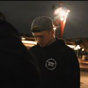

About Me

Throughout my life, I have always enjoyed playing sports. Dating back to when I was 3 years old, my passion for baseball began through the simplistic practice of wiffleball playing. I played baseball for thirteen years. My baseball journey progressed from t-ball, to little league, and eventually on to travelball. Tough travelball gave some of the most nostalgic memories in my life, it eventually drove me away from the game of baseball due to greater intensity and pressure. Currently, I enjoy playing basketball and working out, as I made it a dedicated lifestyle.